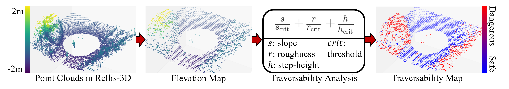
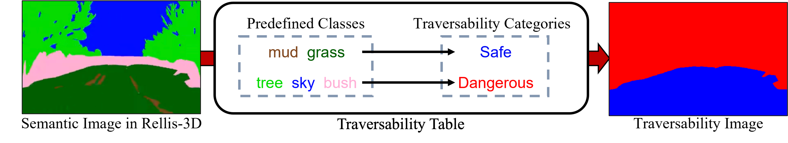
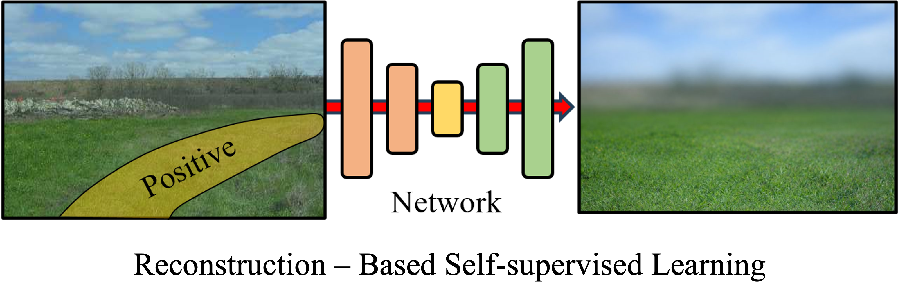
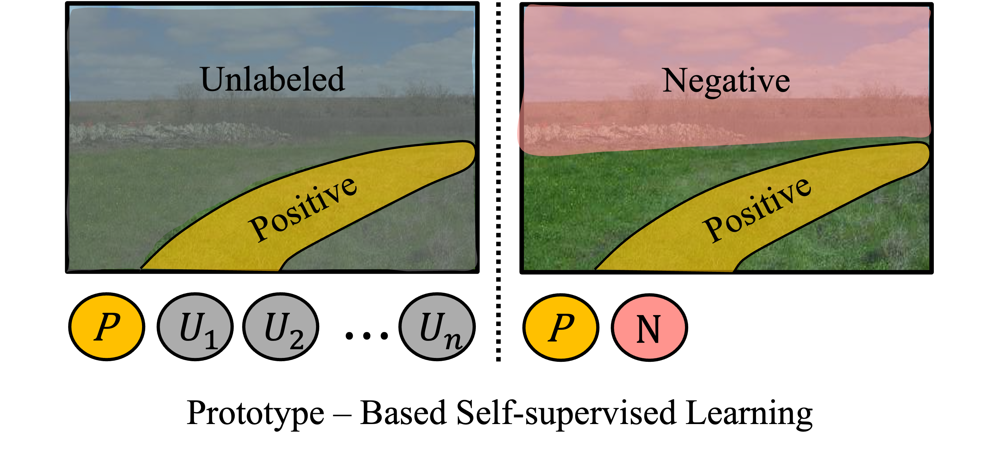

Positive Hypersphere
Latent anomaly detection clusters familiar terrain without explicit negative supervision.
Robot-specific traversability from LiDAR — without manual labels — by learning a positive hypersphere in latent space.
1Spatial AI and Robotics (SPARO) Lab, Inha University, South Korea
Reliable traversability is essential for safe navigation, yet existing pipelines still rely heavily on human-defined rules or struggle with the positive-only nature of robot experience.


Limitation
To avoid human supervision, self-supervised methods learn traversability from the robot's own traversal experience. However, their main challenge is the positive-only learning problem: without negative examples, contrastive samples must be constructed to distinguish traversable from non-traversable regions.
Existing Works: Anomaly Detection for Positive-Only Learning


Remaining Challenges
Safe autonomous navigation requires reliable estimation of environmental traversability. Prior research has relied on semantic or geometry-based approaches with human-defined thresholds, but these methods often yield unreliable predictions due to the inherent subjectivity of human supervision. While self-supervised approaches enable robots to learn from their own experience, they still face a fundamental challenge: the positive-only learning problem.
To address these limitations, recent studies have employed Positive-Unlabeled (PU) learning, where the core challenge is identifying positive samples without explicit negative supervision. In this work, we propose GSAT, which addresses these limitations by constructing a positive hypersphere in latent space to classify traversable regions through anomaly detection without explicit negative samples.
Furthermore, our approach employs joint learning of anomaly classification and traversability prediction to more effectively utilize robot experience. We comprehensively evaluate the proposed framework through ablation studies, validation on heterogeneous real-world robotic platforms (Wheeled and Legged), and autonomous navigation demonstrations in complex simulation environments.
Latent anomaly detection clusters familiar terrain without explicit negative supervision.
Anomaly, reconstruction, and regression losses refine traversability from robot experience.
Wheeled and legged robots receive distinct traversability maps aligned with mobility constraints.
SLAM trajectories projected to BEV grids for efficient real-time supervision.
Deep spatial features encoded into latent terrain representations.
Anomaly detection separates normal/anomalous samples to refine the hypersphere.

The proposed GSAT framework systematically learns robot-specific traversability through three main components:
By integrating these components, GSAT clusters familiar terrains while isolating unseen or hazardous regions — enabling safe navigation without manual labeling.
We analyze how different handling of unlabeled data within the anomaly loss affects traversability estimation across RELLIS-3D and DITER++.

We validate GSAT on Wheeled (Scout Mini) and Legged (Unitree Go1) platforms across Road, Low Bush (<0.6m), and High Bush (>0.6m) terrains.
Wheeled
Traverse: Road
Avoid: Low & High Bush
Legged
Traverse: Road, Low Bush
Avoid: High Bush

GSAT generates platform-specific maps adhering to physical constraints, outperforming LeSTA and DEM-Trav in risk-awareness.

Simulation with Bush Zones and Up-hill sections tests discrimination of traversable grass vs. dense vegetation for safe path planning.

GSAT reaches the goal by accurate real-time risk mapping; LeSTA and DEM-Trav show frequent failure points from conservative or inaccurate estimates.


@inproceedings{cho2026gsat,
author = {Cho, Dongjin and Park, Miryeong and Lee, Juhui and Yang, Geonmo and Cho, Younggun},
title = {GSAT: Geometric Traversability Estimation using Self-supervised Learning with Anomaly Detection for Diverse Terrains},
booktitle = {IEEE International Conference on Robotics and Automation (ICRA)},
year = {2026},
}